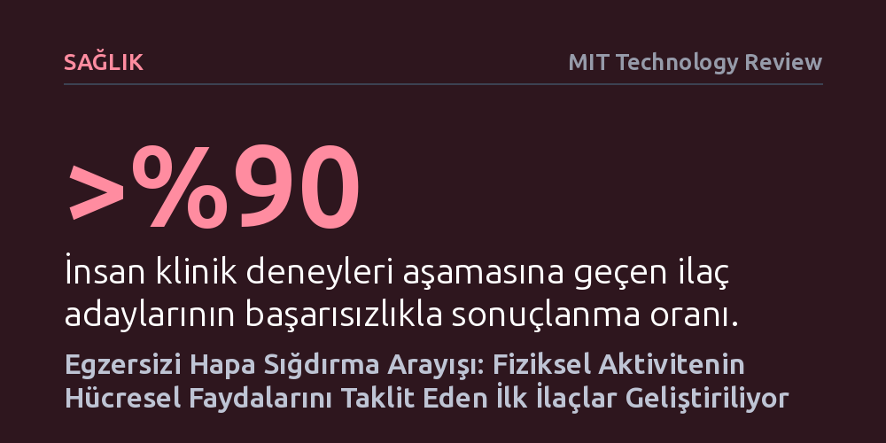

SAGLIK · MIT Technology Review · 2026-10-22
Araştırmacılar, hareket edemeyen hastalar için egzersizin metabolik faydalarını taklit eden yeni ilaç molekülleri geliştiriyor. Farelerde dayanıklılığı artıran ve insanlarda kas kaybetmeden yağ yaktıran ilk adaylar klinik deney aşamasına ulaştı.
Egzersiz haplarının amacının sporun yerini almak değil, hastalık veya yaşlılık nedeniyle hareket edemeyenlerin kas ve metabolizma sağlığını korumak olduğunu gösteriyor.

Düzenli fiziksel aktivitenin kasları güçlendirdiği, kemikleri sağlamlaştırdığı, tansiyonu düşürdüğü ve ruh halini iyileştirdiği tartışmasız bir gerçek. Ne var ki ileri yaşa bağlı zayıflık, fiziksel engeller veya kronik rahatsızlıklar nedeniyle milyonlarca insan bu kazanımlardan bütünüyle mahrum kalıyor. Araştırmacıların son dönemde hız kazanan çalışmaları, sağlıklı bireyleri koltuğa bağlayacak bir tembellik ilacı üretmeyi değil, hareket kabiliyeti kısıtlı kişilerin metabolik sağlığını ve yaşam kalitesini korumayı hedefliyor.
Vücudun hareket anında devreye soktuğu hormon, enzim ve sinyal moleküllerinin oluşturduğu karmaşık biyolojik zincir adım adım çözülüyor. Bilim insanları bu biyokimyasal haritadan yararlanarak, ter dökmeden de egzersizin bazı temel kazanımlarını taklit edebilen ilaçlar tasarlamaya çalışıyor. Amaç fiziksel aktivitenin tüm etkilerini tek bir hapta toplamak değil; egzersizin özellikle metabolizma ve dayanıklılık üzerinde yarattığı kritik koruyucu mekanizmaları harekete geçirmek.
Florida Üniversitesi'nden farmakolog Thomas Burris ve ekibi, kas hücrelerinde egzersiz yapılmadığında bile sürekli açık duran özel bir reseptöre odaklandı. Normalde antrenman yapıldıkça uyarılarak dayanıklılığı artıran bu reseptörü doğrudan çalıştıran bir molekül geliştiren araştırmacılar, fareler üzerinde çarpıcı sonuçlar elde etti. İlaç verilen fareler antrenmansız oldukları halde çok daha uzun süre ve mesafe koşabilirken, Burris bu deneklerin "hiçbir egzersiz yapmadan maraton faresi haline geldiğini" belirtiyor. Molekülün ayrıca bilişsel fonksiyonları destekleyebileceği ve kalp yetmezliğini geriletebileceği yönünde ön bulgular var.
Egzersizi taklit eden bileşikler yalnızca hayvan deneyleriyle sınırlı kalmayıp insan klinik testlerine de taşındı. Biyoteknoloji girişimi Cambrian Bio, geliştirdiği ATX-304 adlı deneysel ilacın obezite ve prediyabet hastalarında karaciğer ve karın bölgesindeki yağları erittiğini duyurdu. İlaç, hücrelerin enerji seviyesi düştüğünde devreye giren ve ip atlama ya da yüzme gibi uzun süreli egzersizlerde yakıt üretimini yöneten hücresel bir enerji sensörünü tetikliyor. Bu mekanizma, son dönemin popüler zayıflama ilaçlarında görülen kas kaybı sorununu yaşamadan kilo vermeyi vadediyor.
Laboratuvarda elde edilen umut verici sonuçlar, bu ilaçların hızla eczane raflarına gireceği anlamına gelmiyor. Egzersizin tetiklediği binlerce karmaşık moleküler yolaktan şimdilik yalnızca birkaçı kontrol edilebiliyor ve bu bilginin güvenli bir ilaca dönüştürülmesi büyük bir sınav niteliği taşıyor. İlaç geliştirme süreçleri son derece kırılgan; insanlı klinik deneylere giren moleküllerin yüzde 90'ından fazlası etkinlik yetersizliği veya beklenmedik yan etkiler nedeniyle eleniyor.
Sürecin önündeki tek engel biyolojik zorluklar da değil. Amerikan Gıda ve İlaç Dairesi (FDA) gibi yetkili kurumlar, formda kalmayı veya genel zindeliği artıran ürünlere değil, yalnızca somut hastalıkları tedavi eden moleküllere ruhsat veriyor. Bu nedenle araştırmacılar geliştirdikleri molekülleri "egzersiz alternatifi bir zindelik hapı" olarak değil; tip 2 diyabet, obezite, kalp yetmezliği ve demans gibi egzersiz eksikliğiyle doğrudan bağlantılı kronik hastalıkların tedavisi olarak konumlandırmak zorunda.
Uzmanlar, fiziksel hareketin kemiklerden beyne, damar sağlığından bağışıklığa kadar vücudun tamamına yayılan kapsamlı etkilerini tek bir hapla sunmanın biyolojik olarak neredeyse imkansız olduğunu vurguluyor. Geliştirilen moleküller, sağlıklı bir bireyin yaptığı tempolu yürüyüşün, koşunun veya ağırlık antrenmanının sunduğu bütüncül zihinsel ve bedensel faydaların yerini tutmayacak.
Buna karşın, yataktan kalkamayacak düzeyde zayıf düşmüş hastalar, ağır kalp yetmezliği çekenler ve kas erimesiyle yüzleşen yaşlılar için bu ilaçlar hayati bir tıbbi köprü kurabilir. Hatta geliştirilen ilk bileşiklerin dayanıklılık üzerindeki etkileri şimdiden o kadar belirginleşti ki, dopingle mücadele otoriteleri bu maddeleri daha ticarileşmeden önleyici olarak yasaklı listelerine aldı. Egzersiz hapları spor salonlarını kapatmayacak; fakat hareket edemeyen milyonlarca insan için tıbbın en önemli dayanaklarından birine dönüşme potansiyeli taşıyor.